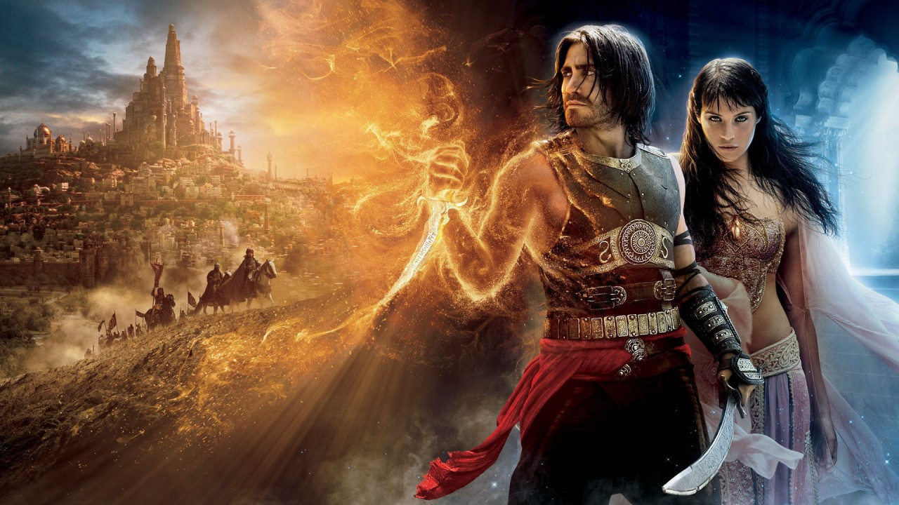

Mass Effect Has No Multiplayer
- 
Just a few days ago, Mass Effect fans got a surprise treat when BioWare revealed the release date and our first gameplay look at Mass Effect Legendary Edition. If you’re wondering whether this remaster will feature a Mass Effect Legendary Edition multiplayer component (based off of Mass Effect 3), nope, it won’t, and it doesn’t seem like it’s in the cards too.
Speaking to Game Informer, BioWare Environment and Character Director Kevin Meek explained why the studio couldn’t implement ME3’s multiplayer into the Legendary Edition.
I feel strongly that we’ve chosen the things that are what the majority of our fans were most passionate about. On the topic of multiplayer, it was just really hard. Getting all of the online systems working and functionality would have been another large chunk to do but at the same time, there are a lot of other logistics involved. The economy is built completely differently. Then questions came up like, “Do we support it post-launch? What about people who are still playing multiplayer today? Do we try to find a way to somehow do crossplay between the PS3 and PS4?
Well, that dashes hopes that we’ll see it release post-launch. Personally, I’m one of the many that loved Mass Effect 3’s multiplayer. Not only was it surprisingly deep, but it made teaming up with other players a blast to clear through each challenge.
Here’s to hoping that the next Mass Effect game being developed will feature it in one form or another.
Source